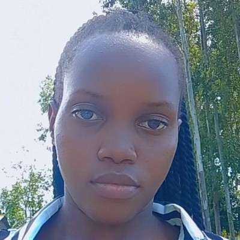

Accessible web design
Engaging, lightweight websites that load quickly and work for everyday citizens on any device.

Information Systems & Technology
Aspiring Website Administrator · Environmental Advocate
First-year BIST student building the skills to design and manage digital platforms that inform and mobilise people about environmental conservation in Uganda.
I am a first-year student pursuing a Bachelor of Information Systems and Technology. Coming from a humble background has shaped my perspective and taught me resilience and resourcefulness.
I live beside Komamboga Health Centre III, where I see daily how community health and the state of the environment are connected. Observing the effect of sanitation and green spaces on my neighbours motivated me to use IT to inform and mobilise people about conservation.
Currently in Year 1
Secondary education
Sapir Hills, Kachumbala, Bukedea District
Primary education
To become an expert website administrator who designs and manages live digital platforms dedicated to environmental awareness.
Many see IT only as a route into corporate networks. I see it as a channel for advocacy, and I believe widespread information is the catalyst for real-world change.
Engaging, lightweight websites that load quickly and work for everyday citizens on any device.
Turning complex climate data into practical, easy-to-follow guidance for the public.
Building the skills to manage, maintain and grow live digital platforms through university lab work and practice.
Share practical waste management tips with residents, supporting cleaner surroundings and better community health.
Support tree-planting initiatives and use online platforms to raise awareness across communities.
Outside my studies I enjoy listening to music. It keeps me focused, and it reminds me that technology and nature must work in harmony, like instruments in a song.